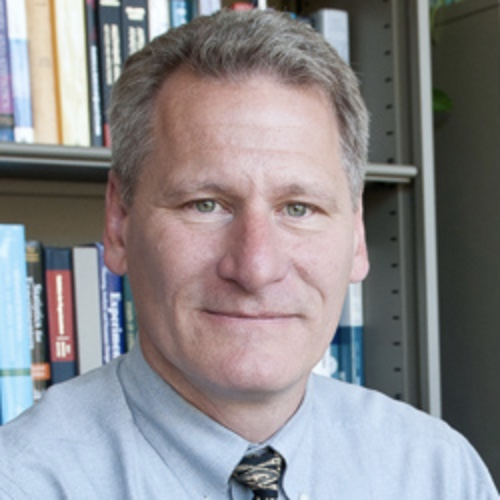

Please send all DYL-related questions and/or concerns to our email address: dyl.professors@northwestern.edu
Course Instructors
Chris Naunheimer
Chris Naunheimer is an adjunct faculty member of Segal’s Design Thinking and Communication program and a capstone project advisor in the Masters of Product Design and Development Management program.
Chris has more than 20 years of experience at multi-national Fortune 500 industrial companies with leadership roles in engineering, R&D, strategic marketing, new product ventures, and user-centered design. Over his career, he became a named inventor on 25 granted US utility patents and brings this innovation and continuous improvement mindset to teaching.
Chris is passionate about design and has a deeply held belief that we can use design to develop insights and solutions that can change people, cultures, and the world.
Kim Hoffmann
Kim Hoffmann leads the execution of new initiatives for the Segal Design Institute. She has helped develop the Master of Science in Engineering Design Innovation (EDI) program since its inception in 2007.
Hoffmann also serves as a director of the James Dyson Foundation, a charitable organization dedicated to engineering and design education.
Previously, Hoffmann worked in product marketing at Logitech, a major manufacturer of personal digital peripherals, where she helped define and launch new products in the mobile mouse category.
She also co-founded RedStart Design, a jewelry design firm, with two other designers from Stanford. One of RedStart’s pieces, the Subtle Safety Ring, is held in the permanent collection at the Museum of Modern Art in New York.

Bruce Ankenman
As a design engineer in the automotive parts industry, Bruce Ankenman found that an engineer’s job depends on the ability to efficiently collect and analyze data. Since many engineers have limited access to statistical methods, his research has centered around developing simple-to-use, yet statistically powerful tools for the design and analysis of both physical and simulation-based experiments.
At Segal, Ankenman directs education programs that focus on the full design process with special attention to meeting human needs with technology.

Joya Fain
No biography found.
Pam Daniels
Pam Daniels is a creative, collaborative leader with global experience in human-centered design and organizational development. For over twenty years, she has been applying design thinking to surface human needs and effectively address them through imagining and creating new possibilities.
Pam is driven by curiosity and empathy—and passionate about taking action to make things better. She loves hands-on making as much as large-scale innovation work, and is skilled in a range of digital fabrication techniques from 3D printing to laser cutting to milling. She loves engaging new people in learning and is always intrigued by what she hasn’t done yet.
When she’s not in the shop making something or in the Corner Makery fixing the 3D printers, you’ll find her in her office/studio on the third floor, sharing her love of design with everyone who comes by.